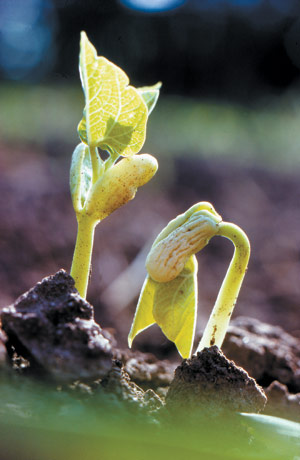

After the warmth of holiday gatherings and festivities, planning for spring comforts us in the cold, short days of winter. Apart from the satisfying process of nurturing little green seedlings under your roof, practical reasons exist to start some of your seeds indoors. First, well-established young plants will produce earlier, thus giving you a longer picking season. In Northern states, such as Pennsylvania, where I live, we start heat-loving, long-season crops such as okra and eggplant indoors if we are to expect anything from them before Labor Day.
Second, many of us routinely start garden plants indoors - rather than buying seedlings from a nursery - to take advantage of special varieties available only from seed companies. Whatever your requirements - tomatoes for drying, storage or exceptional flavor; white eggplants; seedless watermelons; long-keeping cabbage; hot peppers; slow-bolting lettuces - these and many more vegetables with special qualities can be yours if you grow the plants from seed.
Unless you have a greenhouse or a large bank of fluorescent lights, you’ll want to be selective about the varieties of vegetables, herbs and flowers you start at home. Pick ones that will benefit the most from an early start. Given space for only a few, I’d choose tomatoes, eggplant, peppers and cabbage; basil and parsley; and snapdragons and dahlias from the “Spring Indoor Seed-starting Guide.”
Several others, including beets, Brussels sprouts and Chinese cabbage, don’t necessarily need a head start indoors, but I have done so on occasion. Beets need to be thinned, and they are sensitive to toxins in the soil. Brussels sprouts reach their best flavor in fall from spring planting. If you start Chinese cabbage early, sow it in individual pots because transplanting sometimes can make it bolt to seed prematurely.
The following vegetables are not usually recommended for indoor seed sowing: asparagus, snap beans, lima beans, carrots, corn, endive (best in fall from spring outdoor sowing), parsnips (best eaten in fall), radishes, spinach (seeds germinate well in cool soil), soybeans, Swiss chard and turnips. Herbs that fit in this category include dill, cilantro and summer savory.
Your seed orders have arrived and you’re ready to plant. First, gather your containers. These can be special seed-starting flats, cubes or other systems ordered from a catalog; flats made from scrap wood; or a cobbled-together assortment of cut-down milk cartons, used aluminum pans, chipped pots, cottage cheese tubs, etc.
Like many gardeners, I used a motley collection of wooden flats, purchased trays and household discards when I had a home greenhouse with plenty of space. Now, my plant-starting space is more limited, so my system consists of one or two 10-row, commercially made plastic flats - rather flimsy things with narrow, three-fourths-inch-wide rows. Each flat is set into a 12-by-22-inch plastic tray; the 10-row flats are perforated but the trays are not. Soon after the seeds germinate, I transplant the seedlings into individual cells in four-, six- or eight-cell market packs saved from nursery purchases and donated by friends.
With this system, I can plant 20 kinds of tomatoes by putting a cardboard separator in the center of each row, and because the sections are small, I waste less seed as I’m not tempted to overplant.
Homemade scrap wood flats can be any size that fits your available space, with two exceptions: Not too large or they’ll be too heavy to lift when full of soil, and no more than 2 to 3 inches deep. Deeper flats waste potting soil, and too-shallow ones limit root development and dry out prematurely. Leave one-eighth-inch spaces between the slats on the bottom of a homemade flat to allow for drainage. I usually line mine with several sheets of newspaper to keep soil from washing through the bottom wood strips.
Now, fill those containers with growing media that will encourage germination and root growth. Because seeds need only moisture, warmth and air to germinate, they can be started in nutrient-free materials such as vermiculite, shredded moss (not peat moss, which is hard to moisten and tends to crust when dry, but moss collected from the woods) or a mixture of equal parts vermiculite, moss and perlite. Vermiculite is mica that has been superheated to the point of expanding into flaky granules; sometimes, it contains small amounts of naturally occurring asbestos, so keep it damp and use it outdoors. Perlite is heat-expanded volcanic rock.
Today, the easiest plan for me is just to plant seeds in purchased potting soil. In the past, I’ve used a wide variety of homemade media. Here are three recipes that work well, especially for use as growing media for transplanted seedlings:
Fill your planting containers with whatever germinating medium you’ve chosen, gently firm the surface and water it so the medium is thoroughly moistened but not soggy. Use warm water for quick absorption. If you water after planting your seeds, you will wash them into corners or, in the case of tiny seeds, bury them too deeply.
Next, plant your seeds. Place them on the damp soil surface, no closer than one-fourth inch for tiny seeds and half to two-thirds inch for larger ones. Scatter a thin covering of soil over the seeds or just press in those that need sunlight to germinate (see the “Spring Indoor Seed-starting Guide”). Gently firm the seeds and soil in place. Then, before you do anything else, label the flat or row in a 10-row flat with the variety name and planting date.
You’ve given your seeds two of the conditions they need to germinate: moisture and supportive surroundings rich in air spaces. They need no nourishment until they sprout; in fact, soil with too much organic matter can produce an overabundance of carbon dioxide that can deter germination of some seeds.
Now you need to provide the warmth that most seeds need to encourage sprouting. Most homes have warm spots - the top of the water heater, near a radiator or heat vent, close to a woodstove - that will help nurse planted seeds to germination. If your house is cool or those sites are impractical, you can put a commercially made soil-heating cable under your flats.
Water the containers as needed to keep them evenly moist but not sopping wet. Bottom watering, by setting the containers in trays of warm water, is best for two reasons: The seeds are less likely to be flooded, and you’ll avoid surface puddling of water, a sure invitation to soilborne diseases.
Most of the seeds you’re likely to plant indoors will germinate best at temperatures between 75 and 90 degrees. I often cover flats of planted seeds with damp newspapers, but I have learned not to enclose them in plastic bags, which encourage mold. Flats of quick-sprouting plants, such as lettuce, should be checked daily or at least every other day. Once a sprout nudges above the soil surface, even if it is just the “elbow” of a stem - not yet a leaf - expose the seedling to light. Those that lack sufficient light or that grow too closely together develop long, spindly, weak stems.
You’ll notice that the first leaves - the “seed leaves” - of the new, little sprout are less notched and differentiated than the leaves that will appear later. Let the plant subsist on its seed leaves for a few days before you consider transplanting it to a larger container so the roots can develop more fully. You can wait to transplant until the seedling develops its first true leaves, but get the job done before the second set of true leaves appears. If the seedlings are growing too thickly in their germinating flat, then you can thin them by snipping off the extras with scissors, but don’t pull them. Pulling out the excess can disturb the roots of adjacent seedlings if the plants are crowded and developing well.
Why transplant? For one thing, your young plants now need richer soil, especially if they have sprouted in a soilless medium such as vermiculite. If for any reason you leave seedlings growing in a soilless medium (as some gardeners do), you’ll need to feed them a weekly dose of diluted plant fertilizer, such as fish emulsion. Then, seedlings generally need more room to grow than they have in their sprouting containers, especially in 10-row flats. Transplanting stimulates the growth of more feeder roots and gives you an opportunity to select and nurture the strongest seedlings in the batch.
Here’s how to transplant. First, prepare your new containers - cell packs, flower pots, larger flats, etc. - by filling them with loose, clean, new potting soil. (I do reuse potting soil but only for potting up mature plants and bulbs.) Next, prick out your chosen seedlings one by one. Use a slender digging instrument such as a plastic knife, fork handle, ice cream stick or old screwdriver to gently nudge the young plant out of its bed, taking care to retain as many roots as possible. Handle the stem gently to avoid bruising it. Immediately settle the seedling in its new position, at a depth similar to or slightly deeper than its depth in the sprouting medium. Spread the roots out as much as possible and firm the soil gently over them. Now water the young plant well to settle it in and help it compensate for any root damage suffered in transplanting.
Seedlings transplanted into shallow flats or cell packs may dry out faster than those transplanted directly into the garden, so check them daily and water when the soil feels dry, about every three to five days. For those in shallow flats or cell packs, bottom watering is ideal, though messy if you have many wooden flats. My cell packs in shallow plastic trays are easy to bottom water simply by pouring water into the tray. Provide enough water to soak the whole container, but remove or elevate the containers on pebbles if excess water remains in the trays for a day. Waterlogged soil loses vital air spaces and can cause roots to rot.
If your transplants are in a nutrient-containing medium such as a commercial potting soil, they won’t need fertilizer for at least 10 days. At that time, use a half-strength dilution for young seedlings and feed them about every 10 to 14 days until you plant them out. Go easy on the fertilizer if plants receive a less-than-ideal amount of light, as they would if confined to a windowsill.
Most seedlings need less warmth than germinating seeds. A temperature of between 60 and 70 degrees is fine, down to 50 degrees for lettuce and parsley. Young plants forced to make do with inadequate light should not be kept too warm; they will stay stockier and greener during short winter days when not overheated.
Sixteen hours of light a day is ideal, and you’ll need to use fluorescent lights to provide this much light in the winter. Perhaps you can set up lights on an enclosed porch, or in a basement or spare room. My setup is simple: two sets of double 48-inch tubes topped by metal reflector shades and hung on chains above a counter in the basement. Sometimes I keep the lights on day and night, rotating my seedling collection so each tray receives 13 hours of light daily.
Plants need darkness, too, to use absorbed nutrients for new growth. For most efficient use of the lights, keep the tubes clean and position the plants so their leaves are close to the tubes - no more than 4 inches away. To reflect more light onto the plants, prop mirrors, white glossy boards or pieces of cardboard covered with aluminum foil next to the lights. Special plant-growing lights, with wavelengths especially suited to the purpose, are very effective. I’ve also had good results using one cool-white and one warm-white tube in pairs. (See “Use the Right Light for Seed-Starting Success” for more information on using grow lights. - MOTHER)
The most common disease of young seedlings is damping-off, caused by a fungus that thrives in wet, poorly ventilated places. The main symptom is unmistakable: When an otherwise healthy, green-leafed young plant falls over, you’ll notice the stem at soil level looks pinched.
Prevention is easier than curing: From the start, provide good air circulation and avoid overwatering. Also, top off the soil surfaces around the seedlings with milled sphagnum moss, which contains beneficial bacteria known to inhibit certain plant diseases. If only a few seedlings in a batch are affected, you can sometimes save the rest by removing the affected seedlings, improving drainage and air circulation, and spraying the survivors with chamomile or garlic tea.
It’s a week or two before the safe planting-out date (see map) for your hardier seedlings - first onions, then lettuce, parsley and the cabbage family. It’s time to toughen your new plants to withstand the harsher outdoor conditions. Do this by watering less, keeping them a bit cooler and not fertilizing. Hardening off takes a week or so; it’s when you first set your plants outside but before you put them in the ground. At first, give them a half-day in a sheltered place, gradually work up to full sun and, if a frost warning is issued, cover your tender young plants at night.
The ideal planting-out day is cloudy and damp. As you set each plant in its hole in the ground, water it in and then cover the roots with fine loose soil - never with rough chunks of ground or mud. On a bright, sunny day, you might want to cover the seedlings with berry baskets or a span of fabric row cover for shade.
Now that your weeks of careful tending have produced healthy new plants, let yourself gloat a bit. You and your plants have grown into spring, and more good days lie ahead.
- Former Mother Earth News editor Nancy Bubel is the author of The New Seed Starters Handbook. To order, see Page 110 or go toMother Earth Shopping.
Take a moment to consider those seeds you’re about to plant: those flakes, wisps, grains, orbs and particles. No matter how tiny - and some flower seeds are as fine as dust - each seed is a living entity. Within a protective outer coat, the seed contains an embryo that will grow into a seedling, a supply of stored nutrients along with enzymes that convert the stored food into a usable form, and genetic directions for its development. And yes, seeds even “breathe” - that is, they take in oxygen and give off carbon dioxide. When seeds are planted in warm, moist soil, they absorb water, thus activating enzymes that start the sprouting process. Seeds are programmed to grow; we just help them along.
|
 David Cavagnaro Heirloom bean seedlings emerge. |
Walter Chandoha You can start seeds successfully in both premade and homemade containers. |
Walter Chandoha Starting your own seeds gives you a broader selection of varieties than what is usually available in local nurseries |
|
Walter Chandoha In late winter, start onion sets, shallots and garlic indoors in compartmented trays. In three to four weeks, roots will be numerous and leaves 10 to 12 inches high; they’re ready to plant in the garden. Spring rains will make for fat bulbs at harvest time. |
Walter Chandoha Basil seedlings ready to go into the garden. They’ll be set 10 to 12 inches apart, well after the potential for frost has passed. |
Walter Chandoha |
|
Walter Chandoha |
|
|